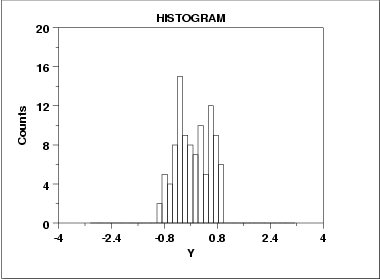

|
1.
Exploratory Data Analysis
1.3. EDA Techniques 1.3.3. Graphical Techniques: Alphabetic 1.3.3.14. Histogram
|
|||
| Symmetric, Short-Tailed Histogram |  | ||
| Description of What Short-Tailed Means |
For a symmetric distribution, the "body" of a distribution
refers to the "center" of the distribution--commonly that region
of the distribution where most of the probability resides--the
"fat" part of the distribution. The "tail" of a distribution
refers to the extreme regions of the distribution--both left
and right. The "tail length" of a distribution is a term that
indicates how fast these extremes approach zero.
For a short-tailed distribution, the tails approach zero very fast. Such distributions commonly have a truncated ("sawed-off") look. The classical short-tailed distribution is the uniform (rectangular) distribution in which the probability is constant over a given range and then drops to zero everywhere else--we would speak of this as having no tails, or extremely short tails. For a moderate-tailed distribution, the tails decline to zero in a moderate fashion. The classical moderate-tailed distribution is the normal (Gaussian) distribution. For a long-tailed distribution, the tails decline to zero very slowly--and hence one is apt to see probability a long way from the body of the distribution. The classical long-tailed distribution is the Cauchy distribution. In terms of tail length, the histogram shown above would be characteristic of a "short-tailed" distribution. The optimal (unbiased and most precise) estimator for location for the center of a distribution is heavily dependent on the tail length of the distribution. The common choice of taking N observations and using the calculated sample mean as the best estimate for the center of the distribution is a good choice for the normal distribution (moderate tailed), a poor choice for the uniform distribution (short tailed), and a horrible choice for the Cauchy distribution (long tailed). Although for the normal distribution the sample mean is as precise an estimator as we can get, for the uniform and Cauchy distributions, the sample mean is not the best estimator. For the uniform distribution, the midrange
|
||
| Recommended Next Step | If the histogram indicates a symmetric, short-tailed distribution, the recommended next step is to generate a uniform probability plot. If the uniform probability plot is linear, then the uniform distribution is an appropriate model for the data. | ||